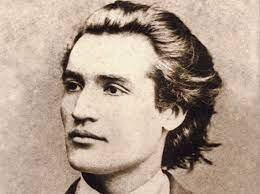
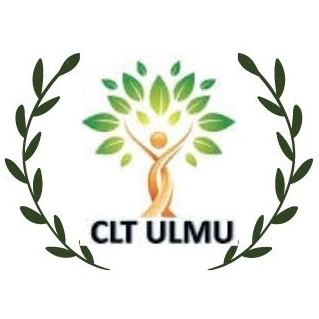
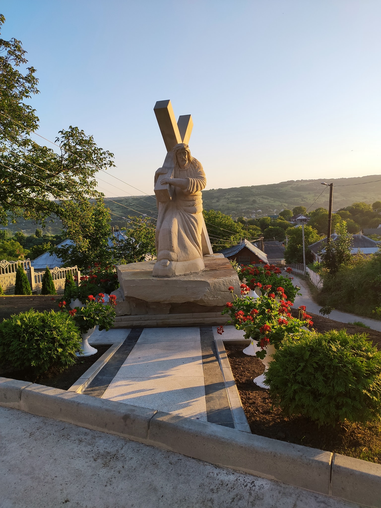

Evenimente
„Dor de Eminescu”
Proiectul ”Dor de Eminescu” s-a născut din pasiunea pentru poezie și entuziasmul copiilor și adolescenților din Gimnaziul ”Mihai Eminescu” de a se implica în pregătirea primei ediții a unui festival raional, care e planificat să se desfășoare la Ulmu în ianuarie 2022. Felicitări grupului de inițiativă "Pro Cultura"! (Elevii de ieri și de azi din Gimnaziul "Mihai Eminescu" Ulmu )
Adunare Generală
Salutare, tineri ai satului Ulmu! ‼️Duminică, 30 mai 2021, la ora 12.00, în sala mică a Casei de Cultură Ulmu va avea loc Adunarea Generală a Tinerilor satului Ulmu. Adunarea Generală a Tinerilor presupune un for reprezentativ al tinerilor din satul Ulmu. La Adunarea Generală a Tinerilor pot participa toate persoanele din satul Ulmu, cu vârsta cuprinsă între 14 și 35 de ani, care își doresc să devină membrii în noul CLTU. Vă așteptăm!
Inaugurare!
Iubiți Întru Hristos frați și surori ! Cu ajutorul Domnului și susținerea dvs a tuturora ne apropiem de sfîrșitul lucrărilor la Crucea care o duce pe umeri Hristos de pe dealul Bisericii. Cu drag vă anunțăm că Duminică după Sfînta Liturghie vom oficia Sfințirea acestei Binecuvîntate și Plăcute lui Dumnezeu lucrări !! Vă așteptăm cu drag !!! + Protoiereul-Mitrofor Petru Pisica Parohul Bisericii cu Hramul ,,Întrarea Maicii Domnului în Biserică"
Proiectul gazificare

Este în toi construcția gazoductului de presiune înaltă din satul Ulmu din r-nul Ialoveni. Proiectul include construcția rețelei magistrale subterane de gaz natural de presiune înaltă și medie din țevi PE 110 mm cu lungimea de 12,185 km. Montarea magistralei de gaze naturale de presiune medie și joasă în satul Ulmu se va efectua respectând toate cerințele. Perioada de implimentare: Iunie 2021 – Decembrie 2021